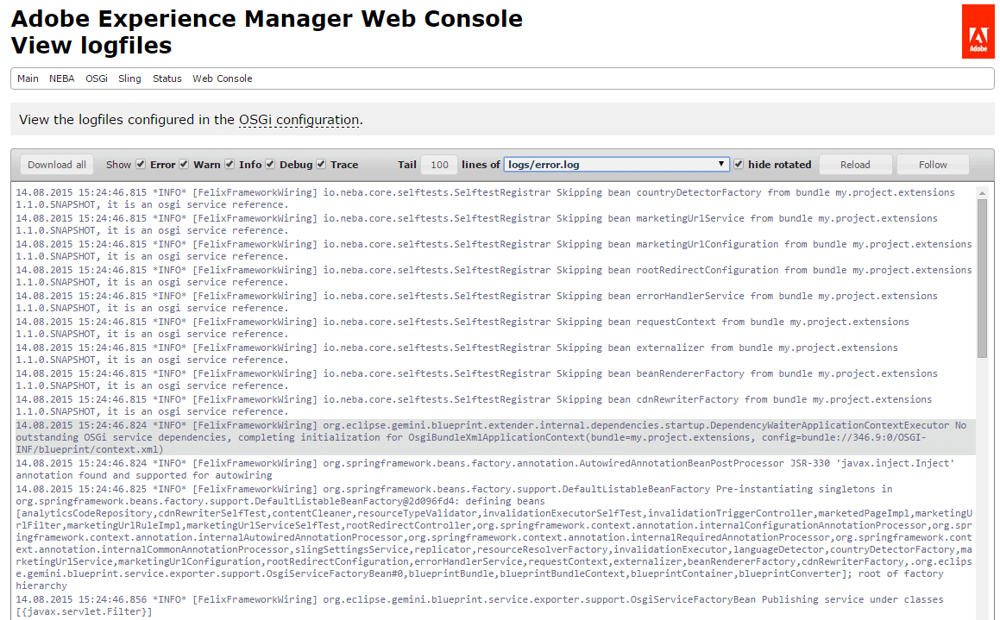

Geting started
Getting started with NEBA only requires two simple steps:
Step 1: Download and integrate NEBA
install the delivery package and integrate the NEBA API into your project.
Step 2: Add an OSGi blueprint context to your bundle(s)
{% highlight xml %}That's it - you may now proceed to Write resource models or Spring controllers - for instance, use the sample project below as a starting point.
NEBA directive: A sample project for NEBA
Checkout NEBA directive, a NEBA sample project created for the .adaptTo conference and continuously updated.Writing @ResourceModels
Resources, resource types and resource models
Background: How NEBA uses resource types in Sling
The Sling webframework is a REST architecture implementation. Consequently, it treats each thing it works with (every piece of content, every script, servlet) as a Resource. Resources are typed using the property sling:resourceType. Resource types - very much like types in many other languages - also support inheritance by means of a sling:resourceSuperType attribute.
Resource types are used by Sling to determine the view(s) that shall be used to render the resource. It does so by adding a prefix such as /apps or /libs to the resource type and checking whether it finds views for the resource in the corresponding directory.
Furthermore, any content stored in the JCR is represented by a javax.jcr.Node. Nodes are strongly typed - they aways possess a primaryType as well as an arbitrary number ofmixin types. Both the primary type and the mixin types can have super types.
In order to provide a JAVA model for a resource, it thus makes sense to either associate it with the resource's sling:resourceType or the resource's Node type. This association is represented using a @ResourceModel annotation.
Let's assume we need a simple JAVA model for a sling component called "carousel". The carousel has the sling:resourceType "foundation/components/carousel". The component has the following properties:
{% highlight json %} { "jcr:primaryType": "nt:unstructured", "playSpeed": "6000", "jcr:lastModifiedBy": "admin", "pages": [ "/content/geometrixx/en/events/techsummit", "/content/geometrixx/en/events/userconf", "/content/geometrixx/en/events/shapecon", "/content/geometrixx/en/events/dsc" ], "jcr:lastModified": "Tue Oct 05 2010 14:14:27 GMT+0200", "transTime": "1000", "sling:resourceType": "foundation/components/carousel", "listFrom": "static" } {% endhighlight %}Create the following class in your bundle package (i.e. within or below the "my.bundle.namespace" package)
{% highlight java %} @ResourceModel(types = "foundation/components/carousel") public class Carousel { } {% endhighlight %}The resource type given in the @ResourceModel annotation does not have to be the exact resource type of the resource. One may also specify any resource super type of the resource, primary node type or mixin type. In our case, the resource super type of the carousel is "foundation/components/list" (see the carousel component in /libs/foundation/components/carousel). Using this resource type in a @ResourceModel would work, too. This way, one can provide general models for super types, and more specific models for derived types, e.g. a generic model for pages and a more specific model for specific page types.
Background: @ResourceModels
Classes annotated with @ResourceModel are regular spring beans. If you look at the @ResourceModel annotation, you will notice that it is itself annotated with @Component (a spring stereotype) and @Scope(PROTOTYPE). With these annotations, the class is detected by Spring's classpath scanning. It is entirely possible to give your model a different scope (such as singleton) if it represents a "static" piece of content, such as configuration content stored under /etc/. Furthermore, all capabilities of the spring container are available to the model, such as IOC (dependency injection), e.g. using the JSR-330 @Inject annotation, bean lifecycle annotations such as @PostConstruct and @PreDestroy, @Scheduled methods and so forth.
Once a bundle with NEBA models and a blueprint context is active, all of its models must appear in the NEBA model registry (/system/console/modelregistry) in the sling console. If not, the blueprint context likely failed to start. In such cases analyzing the error.log is advisable.
Using models in views
Resource models can be automatically provided in either Sightly or JSP views using the neba.js or neba:defineObjects tag library, respectively:
{% highlight html %}Both are looking up the most specific model for the current resource. The neba:defineObjects tag always publishes the model into the scripting context under the key "m". In both examples above, you could access the model like so:
{% highlight java %}${m}{% endhighlight %}The most specific model is the one who's type attribute points to the closest type within a resource's type hierarchy. For example, if the resource has the type "cq:Page" and the super type "nt:base", a model for "cq:Page" is more specific than one for "nt:base". If there is more than one most specific model, e.g. two models for "cq:Page", neba.js and the neba:defineObjectsTag will not provide the model automatically. In such cases, you could either explicitly adapt to the desired model type or specify the desired model's bean name (you can lookup the bean name in the model registry), like so:
{% highlight html %}However, one may also explicitly adapt the current resource to the model, like so:
{% highlight html %}Mapping properties and resources to models
Following, we will map the properties of the carousel sample content, as defined in the previous chapter: {% highlight json %} { "jcr:primaryType": "nt:unstructured", "playSpeed": "6000", "jcr:lastModifiedBy": "admin", "pages": [ "/content/geometrixx/en/events/techsummit", "/content/geometrixx/en/events/userconf", "/content/geometrixx/en/events/shapecon", "/content/geometrixx/en/events/dsc" ], "jcr:lastModified": "Tue Oct 05 2010 14:14:27 GMT+0200", "transTime": "1000", "sling:resourceType": "foundation/components/carousel", "listFrom": "static" } {% endhighlight %}
Let's take "pages", "playSpeed", "transTime" and add them to the model:
{% highlight java %} @ResourceModel(types = "foundation/components/carousel") public class Carousel { private String playSpeed; private String transTime; private ListNow build and deploy your bundle again and output the properties in the view like so:
{% highlight java %}Play speed: ${m.playSpeed}
Trans time: ${m.transTime}
Pages: ${m.pages}
{% endhighlight %}
You will see the following output:
{% highlight java %}Play speed: 6000 Trans time: 1000 Pages: {% endhighlight %}Annotations for resource to model mapping
All NEBA annotations can also supported as meta-annotations - thus, custom annotations annotated with any of the annotations provided by NEBA are treated as if the corresponding NEBA annotation was directly applied.
Resolving references with the @Reference annotation
NEBA automatically maps the properties of a Resource to fields named like the properties, unless the field is annotated with @Unmapped. Notice that play speed and trans time are Strings in this example, whereas one would expect them to be integers. This is simply because these values are defined to be Strings in the component's CQ dialog. Had they been defined as integers, we could also retrieve them as integers. You will also notice that "pages" is null. And no wonder - the "pages" property is actually of type "String[]", so the field should also be of type String[] and not List<Resource>. However, NEBA offers a simple way to declare that a field contains one ore more references to other Resources. Simply add the @Reference annotation like so:
{% highlight java %} @Reference private ListDeploy, and load the page again. Now all referenced pages get listed:
{% highlight java %}Play speed: 6000 Trans time: 1000 Pages: [JcrNodeResource, type=cq:Page, superType=null, path=/content/geometrixx/en/events/techsummit, JcrNodeResource, type=cq:Page, superType=null, path=/content/geometrixx/en/events/userconf, JcrNodeResource, type=cq:Page, superType=null, path=/content/geometrixx/en/events/shapecon, JcrNodeResource, type=cq:Page, superType=null, path=/content/geometrixx/en/events/dsc] {% endhighlight %}When NEBA detects a @Reference annotation, it assumes that the value of the corresponding property (here: "pages") is one or more resource paths. It obtains the corresponding resources and provides them as a Collection (or a single resource, if the annotated field is not a collection type). However, you are not limited to using "Resource" for your reference. The following also works, provided there is a "Page" model the referenced resources can be adapted to:
{% highlight java %}@Reference private ListHere, NEBA loads the resource referenced in the "pages" property, adapts each resource to "Page" and returns a collection containing the resulting Page instances.
One can also alter the path of the reference prior to resolution by appending a relative path segment to the reference(s), like so: {% highlight java %}@Reference(append = "/jcr:content") @Path("pages") private ListHere, instead of resolving and adapting the paths in the property "pages" directly, "/jcr:content" is appended to all of the paths prior to resolution.
Resolving children with the @Children annotation
While the resource hierarchy is conveniently navigable using the generic Resource model (i.e. using getChildren()), one often has to subsequently adapt the children. Consequently, the children are adapted in a loop, including null check for each adaptation result. Here, NEBA offers another powerful annotation: @Children. This annotation can be used on a Collection, Set or List-typed field (similar to the @Reference-annotation). Then, NEBA injects the children of either the current resource (if no other annotation is present), or of the resource defined by the @Reference or @Path of the field:
{% highlight java %}@Children private ListOf course, NEBA will also automatically adapt the children to the generic type of the list - for instance, you could write:
{% highlight java %} @Children private List@Children can be combined with both @Reference and @Path to even fetch the children of a reference resource or a resource designated by a specific path, i.e. the following works as well:
{% highlight java %} @Path("/content/site") @Children private ListFurthermore, you may specify a relative path to be resolved below every child using the property "resolveBelowEveryChild" instead of returning the direct children of the designated resource. For example, you could obtain all nodes called "jcr:content" underneath all children of the current resource, like so:
{% highlight java %} @Children(resolveBelowEveryChild = "jcr:content") private ListUsing the @Path annotation to specify property names or resource paths
Now, lets add another property to the model, jcr:lastModified.
{% highlight java %}private Date lastModified;{% endhighlight %}This will not yet work - NEBA mapps the properties by name, in this case the name contains characters ("jcr:") unsuitable for a field name. In this case, use the @Path annotation to specify the property from which the field's value shall be obtained:
{% highlight java %} @Path("jcr:lastModified") private Date lastModified; {% endhighlight %}Now the property is mapped! @Path has even more interesting features, for instance allowing absolute and relative paths. Try this:
{% highlight java %} @Path("/content/geometrixx/en") private Resource en; {% endhighlight %}Furthermore, one can use placeholders in the @Path to dynamically provide path elements. A better version of above example is:
{% highlight java %} @Path("/content/geometrixx/${language}") private Resource homepage; {% endhighlight %}To resolve the ${language} placeholder, one simply provides a bean implementing the PlaceholderVariableResolver interface. Such a bean instance will be asked to resolve the value for a placeholder key, i.e. "language" in the above example. A completely hardcoded example would be:
{% highlight java %} @Service public class MyVariableResolver implements PlaceholderVariableResolver { public String resolve(String variableName) { if ("language".equals(variableName)) { return "en"; } return null; } } {% endhighlight %}The @This annotation
Fields annotated with @This are injected with the current resource, or anything the resource is adaptable to. This annotation is thus not just useful for access to the plain Resource, but has significant architectural value. Using @This, one may split up a model into multiple aspects and compose them dynamically, like so:
{% highlight java %} @ResourceModel(types = ...) public class MyModel { @This // OtherModel models a different aspect of the same resource. private OtherModel resource; } {% endhighlight %}You can also use the @This annotation to obtain the Resource that is mapped onto the model:
{% highlight java %} @This private Resource resource; {% endhighlight %}Models for crosscutting concerns
A @ResourceModel is not restricted to sling:resourceType's - you can also map it to the JCR primary node type or any of the mixin types of a Node. For example, let's assume that you have a requirement to implement a custom access protection of arbitrary content. In addition, a content manager may configure access restriction to any content (e.g. pages or a binary assets). In this case, we know neither the resource types nor the content paths to which the protection applies in advance. Here, using a mixin node type could help. A mixin can be assigned to any node at any time anywhere in the content hierarchy. It can define additional properties that can be set on the node, such as a set of properties defining how an access restriction is configured. Let us assume a protected content is assigned the mixin "mix:AccessRestricted". You may then create a model for any access restricted content like so:
{% highlight java %} @ResourceModel(types = "mix:AccessRestricted") public class AccessRestricted { .... } {% endhighlight %}Finally, you could adapt to this model (e.g., in a view or filter) to determine whether the corresponding resource has restricted access, and what the restrictions are.
Further reading: JCR repository spec, administering node types.
Lazy loading
Reading data into an object graph - such as NEBA models referencing each other - bears the risk of loading more data than required for rendering. Especially when there is a significant amount of repository content, being able to load models on demand rather then up front is crucial for building high-performance implementations. To achieve this, NEBA enables lazy-loading model relationships.
Lazy loading collections of references
All collection-typed references are automatically provided as lazy-loading proxies, for example in case of @Children and @Reference collections:
{% highlight java %} @ResourceModel(types = "...") public class MyModel { @Children private ListThe contents of these collection are loaded as soon as a collection method - such as get, size, isEmpty, iterator - is called. The lazy-loading behavior for collections is thus completely transparent.
Declaring lazy-loading relationships using the Optional<T> interface
1:1 relationships are not automatically lazy. In order to make them lazy-loading, NEBA provides the Optional interface:
{% highlight java %} @ResourceModel(types = "...") public class MyModel { @Reference private OptionalBackground: Why 1:1 relationships cannot be lazy by default
Let us assume there is a resource model that references resource "r":
{% highlight java %} @ResourceModel(types = "...") public class MyModel { @Reference private Resource r; public void doSomething() { if (r != null) { // work with r } } } {% endhighlight %}Of course, any client working with "r" must know it exists. However, there is no natural "empty" representation for Resource - it is either null or not. Now, if r was provided as a lazy-loading proxy that proxy instance would never be null (since determining whether the resource represented by "r" exists would mean having to load it, which defeats the purpose of lazy-loading).
A user of "r" would only find out that "r" does not exist when accessing a method of the "r" lazy-loading proxy - and receiving an unchecked exception in return, since the proxy cannot dispatch the method call as the loaded "r" is null.
Consequently, lazy 1:1 relationships must be explicit to allow clients to determine whether the relationship exists. Collections, on the other hand, do have a natural representation of emptiness (isEmpty) and are thus automatically provided as lazy-loading proxies by NEBA.
The Optional<T> interface is an extract of the JAVA 8 "Optional" interface. NEBA automatically provides an implementation that will load the reference upon request. Of course, you may also use the interface for collection-typed references:
{% highlight java %} @ResourceModel(types = "...") public class MyModel { @Children private OptionalIn this case, NEBA will not provide the collection as a lazy-loading proxy, but simply load it when requested via the Optional interface implementation.
Performing additional initializations
It is often required to perform some additional initializations after all properties of a @ResourceModel are mapped. NEBA supports this use case with the @PostMapping and @PreMapping annotations. Similar to @PostConstruct and @PreDestroy from standard Java, these annotations mark methods to be invoked after all properties of a resource model are mapped from its resource:
{% highlight java %}@ResourceModel(types = "my/model/type") public class MyModel { @This private Resource resource; @PostMapping public void initializeSomething() { // resource is initialized at this point. this.resource.adaptTo... } } {% endhighlight %}Likewise, @PreMapping allows for method execution before any properties of the resource are mapped.
Using Spring MVC in Sling
By default, Sling supports three kinds of scripts: JSPs, Sightly templates and plain Servlets. While the former two are decent to render dynamic resources, i.e. content pages and components that have no fixed URL, servlets are often used to provide RESTful services with a fixed URL. However, Servlets are quite primitive. They do not provide separation of model, view and controller or common yet complex features such as form data binding. With NEBA, one can alternatively use all of Spring's MVC features to enable clean, simple and RESTful MVC with fixed URLs.
To avoid conflict with resource resolution and servlet mappings, Spring MVC is integrated into Sling using a Servlet with the fixed URL "/bin/mvc" (you may use servlet resolver mapping to change this path). Since each distinct path in sling maps to a different resource (servlets are resources, too), the path /bin/mvc/url would not point to the /bin/mvc/ servlet. Thus, to have a request handled by the MVC servlet, the pseudo-extension".do" is used. A spring controller with the URL /my/controller/path is thus always addressed using /bin/mvc.do/my/controller/path. One may also use an extension and selectors (e.g. /bin/mvc.do/my/controller/path.selector1.selector2.xml).
Let's create a simple Controller called "DemoController". We will use Spring's @Controller annotation; other styles (such as mapping by bean names etc.) are also supported. The purpose of this controller is to echo a parameter that we provide in a RESTful way, i.e. as a path element (this allows caching!).
{% highlight java %} @Controller public class DemoController { } {% endhighlight %}A @Controller is automatically detected and registered (as a singleton) by Spring's classpath scanning. Let's use Spring's REST support to both define the URL the controller listens to and the parameter we expect:
{% highlight java %} @Controller public class DemoController { @RequestMapping("/echo/{param}") @ResponseBody public String echo(@PathVariable("param") String paramToEcho) { return paramToEcho; } } {% endhighlight %}That's it. You may now call your controller e.g. with /bin/mvc.do/echo/HelloWorld.txt.
Furthermore, NEBA automatically provides handler method argument resolvers for Sling-specific request elements, SlingHttpServletRequest and -Response, RequestPathInfo and ResourceResolver, like so:
{% highlight java %} @Controller public class DemoController { @RequestMapping("/echoTitle") @ResponseBody public String echo(ResourceResolver resolver, RequestPathInfo info) { ... } @RequestMapping("/echoTitle") @ResponseBody public String echo(SlingHttpServletRequest request) { ... } } {% endhighlight %}It is thus not necessary to obtain these elements from the request.
Note that the annotation-driven controllers have a lot more very powerful options. See the Spring MVC documentation for more examples. NEBA also supports Spring's special view names for redirecting and forwarding views: returning "redirect:/some/path" from a controller method will cause a redirect to /some/path, returning forward:/some/path will forward the request to /some/path, see also MVC redirecting.
You may also directly work with the response. For this, provide your own org.springframework.web.servlet.View in the org.springframework.web.servlet.ModelAndView provided by the controller; this way, your View's render method is used to render the response. Alternatively, you may also simply write to the response and either let the controller method return "null" or make it void. This is however bad practice and thus discouraged.
Resolving resource path parameters with the @ResourceParam annotation
NEBA supports the common use case of handling resource paths in controllers with a convenience annotation:
{% highlight java %} @Controller public class DemoController { @RequestMapping("/echoTitle") @ResponseBody public String echo(@ResourceParam Page page) { return page.getTitle(); } } {% endhighlight %}Here, a request parameter "page" is expected to contain a path to a resource. This resource is resolved and adapted to the parameter type in case the parameter type is not "Resource". @ResourceParameters can be optional or required. In addition, they can have a default value (a default resource path) that will be used in case the parameter is not present or empty:
{% highlight java %} @Controller public class DemoController { @RequestMapping("/echoTitle") @ResponseBody public String echo(@ResourceParam(defaultValue = "/default/resource/path") Page page) { return page.getTitle(); } } {% endhighlight %}Here, "page" is implicitly considered option (since there is a default value)
Furthermore, the content paths resolved by the @ResourceParam annotations can be altered by appending an arbitrary sub-path:
{% highlight java %} @Controller public class DemoController { @RequestMapping("/echoTitle") @ResponseBody public String echo(@ResourceParam(append = "/jcr:content") PageContent pageContent) { return pageContent.getTitle(); } } {% endhighlight %}The path specified in "append" is appended to the provided path or the specified default path prior to resolution.
Configuring MVC logging
Internal errors during controller invocation, e.g. when required parameters are missing, are logged to the logs/error.log on "warn" level by default. It is highly recommended to configure a separate logfile for these messages and disable this logging on production, since it is very likely for such exceptions to arise constantly due to user mistakes, bot activity and the like. To configure a custom logile, simply create a new Apache Sling Logging Logger Configuration using "mvc" as the Logger name, like so:

Support for web-specific bean scopes
Beans in Spring have scopes. By default, beans are application scoped
(i.e. singletons). @ResourceModels have prototypical scope, i.e. they are re-created every time they are obtained from
the bean factory. In a web context, objects may also be scoped to the current request or the current session.
NEBA provides support for the request scope, i.e. a bean may be defined like so:
However, the session scope is currently not supported since it leads to a lot of issues (lack of scalability due to the need of session stickiness to an instance, high memory usage, serialisation etc.) In a RESTful Application, the session should not be used. User data may instead be stored in a cookie; if server-side state inevitable, storing it in a shared data store (e.g. a shared JCR repository or relational DB) and retrieving it upon request is a much more scalable, cleaner solution.
NEBA tooling for developers and administrators
To support developers beyond writing resource models, NEBA ships with a set of useful development and administration tools for exploring resource model characteristics as well as quickly resolving the resource model / content relationships. Finally, an log viewer integrated into the Felix console greatly improves issue analysis in cases where serial access to the system is an issue.
NEBA model registry
The model registry allows viewing all currently registered resource models, their source bundle and the resource types they are mapping to. In addition, the models can be filtered to find models mapping to specific content or models compatible to specific classes.

NEBA model statistics
For every detected resource model, NEBA extracts metadata that is reused to efficiently map resources to these models. Whenever resources are mapped to models, NEBA gathers data regarding the mapping duration. This combined resource model data is available via a JSON REST API in the model statistics console (/system/console/modelstatistics/api/statistics).
The NEBA model statistics console (/system/console/modelstatistics) uses this data to visualize the corresponding model characteristics. In addition, the console allows querying the data to display models with certain features, for instance to discover models performing below average and/or excessively loading data from the repository. Give it a try:
Writing expressions
An expression filters the list of resource models. It allows finding models with specific performance characteristics. For instance, mappings > instantiations finds models causing more than one subsequent resource to model mapping when instantiated. The query averageMappingDuration > average(averageMappingDuration) finds resource models who's individual average mapping duration is higher than the average mapping duration of all resource models. All properties, except when enclosed in entire(...) or average(...), apply to the individual model. For instance, mappingDurationMedian < averageMappingDuration translates to "find models who's mapping duration median is less than it's average mapping duration". One can also employ sub clauses and arithmetic expressions. For instance, totalTime > entire(totalTime) * 0.05 finds models that are responsible for more than 5% of the entire mapping time.The model visualization
The models are ordered by their total mapping time (totalTime). Each graph exhibits the following dimensions;| Instantiations | The number of times the model was instantiated |
|---|---|
| Subsequent mappings | The total number of resource to model mappings initiated by a resource model, i.e. the subsequently used resource models. |
| Ø duration | The average duration of one resource to model mapping for this type |
| median | The median duration of one resource to model mapping for this type |
| Lazy fields | The number of lazy fields (Optional fields or lazy-loading collections) of this resource model |
| Greedy fields | The number of non-lazy fields (neither Optional nor lazy-loading collection) of this resource model |
| Total time | The total time spend mapping this model |
This unique feature makes visible what could usually only be discovered through time-consuming analysis using a profiling tool. Furthermore, the model statistics allow real-time performance monitoring and analysis on any system. This is especially valuable for productive systems - there, content changes may trigger performance degradation and attaching a profiler usually isn't an option. NEBA's model statistics console makes finding performance bottleneck's in resource models fast and easy - further adding to better performing implementations.
The log viewer
Developers do not always have serial access to a system in order to analyze log files - however, being able to investigate the log files of a Sling instance is often key to finding and resolving issues timely. Here, NEBA provides the log viewer Felix console plugin - a safe way to view analyze and obtain the configured log files of a Sling instance for authenticated uses ot the Felix console.
The log viewer console allows filtering log files with regard to the log level, tailing and following logfile changes and instantly downloading logfiles as ZIP compressed packages for offline analysis.

Extending NEBA
Customizing the Spring MVC infrastructure
You may provide implementations of Handler adapters, Handler exception resolvers and Handler mappings in your application context and / or use Spring's <mvc> XML namespace configuration without limitations.
Lifecycle callbacks
Additional functionality is usually provided by simply adjusting the spring context configuration to the project needs (i.e. configuring beans and customizing the bean lifecycle).
However, there is an additional lifecycle phase of @ResourceModels in beans: after creation, dependency injection
and initialization, a resource model is injected with the properties of the resource which is adapted to the model.
For programmatic extensibility, the NEBA API contains the lifecycle callback interface ResourceModelPostProcessor.
Providing an OSGi service with this interface allows customization and even overriding of a ResourceModel before and
/ or after the resource properties are mapped on it. The demo project's com.unic.cq.foundation.demo.i18n
package and context.xml contain an example of how this lifecycle callback can be used to support an additional
annotation on a resource model.
First-class support for custom annotations
NEBA allows registering custom mappers for annotated fields. A custom mapper is an OSGi service implementing the AnnotatedFieldMapper interface. Implementations may map any non-transient annotated field, including fields directly or indirectly (meta-annotations) annotated with any of NEBA's standard annotations. Thus, AnnotatedFieldMappers are allowed to extend or override NEBA's standard annotation-based mapping behavior.
Extending the tag library
While NEBA's DefineObjectsTag is part of the NEBA API, writing a standalone tag library is the recommended approach to avoid tight coupling to implementation details of the NEBA tag library.
Caching and cache extension
NEBA's central and most performance critical feature is the adaptation of Resources to their corresponding resource models. There, resource and model resolution, content-to-object mapping and datatype conversion occurs. This core functionality features an extensible caching interface. Any OSGi service implementing the NEBA API interface ResourceModelCache will automatically be registered and used to cache the result of the resource to model adaptation.
NEBA ships with a safe and sensible default implementation of this interface contained in the core, the request-scoped resource model cache. This cache can be enabled or disabled via the Felix console (configuration tab). If you would like to provide your own caching implementation, consult the Javadoc of the ResourceModelCache for further information.
Architecture
The following documentation is not meant to be complete in a sense of covering every implementation detail. It strives to illustrate the core design ideas, as well as the most important components and processes of NEBA.
The diagrams in this document are created using Sparx systems Enterprise Architect. You can Download the EA file.
Container view
NEBA amends Sling's open core with further open source software, which in turn is internally structured in modules. We will refer to such component compositions using the generic term container. NEBA is comprised of the following containers:
Modules view
NEBA consists of the following modules. Each module is represented by a single OSGi bundle and a corresponding maven module.

Core packages view
Each package of the core represents a semantically grouped amount of features. The following diagram shows the most important feature groups and illustrates the overall design approach of the core

Application context post-processing
The central feature of NEBA is the registration of Spring beans using the NEBA API, for instance beans annotated with @ResourceModel. To do so, NEBA attaches to the construction process of Spring application contexts. As soon as all beans are successfully created, but prior to the publication of the context, NEBA post-processes the context and looks up beans using NEBA API annotations or implementing NEBA API interfaces.

Resource model registration and adapter factory provisioning
The registration of resource models and the subsequent management of the resource model metadata for mapping purposes account for the most valuable NEBA features. Likewise, they require a well-designed collaboration of context post-processing, metadata creation and -storage as well as updates of the generic resource model adapter factory. The following communication diagram illustrates the complete resource model registration process, from a bundle change event to the publication of the registered resource model metadata via a Sling adapter factory.